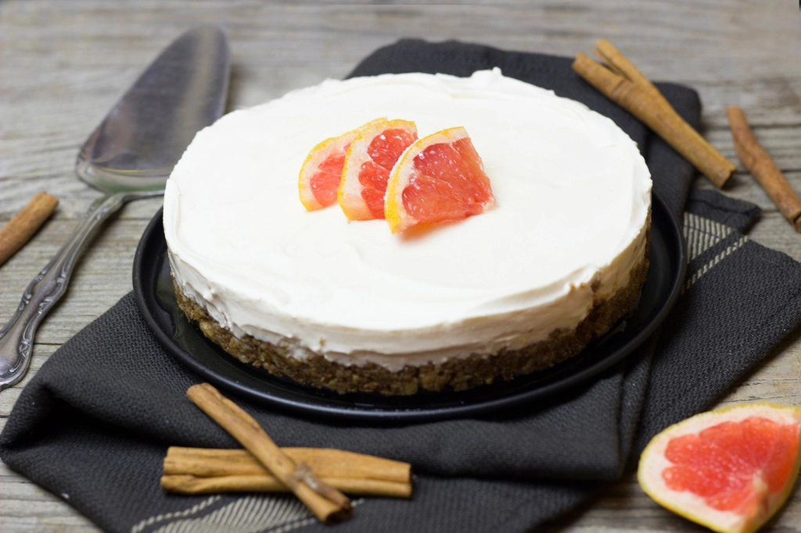
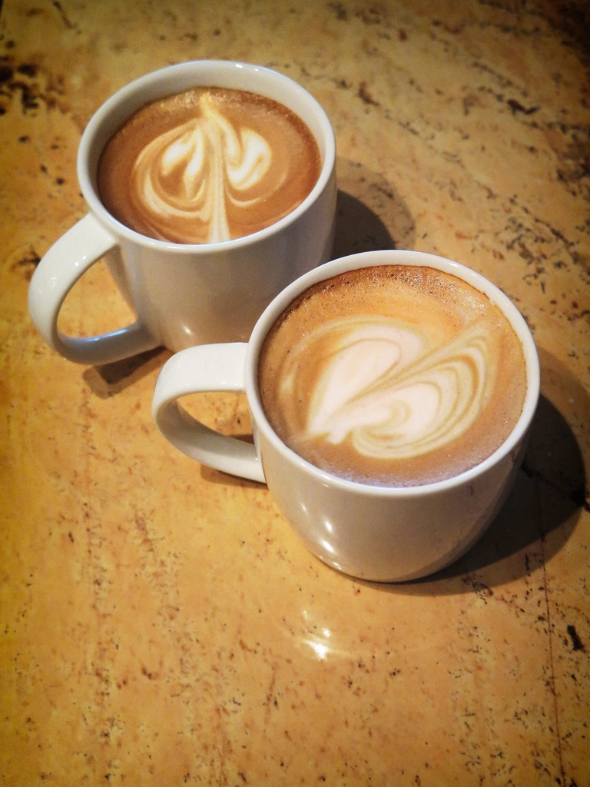

Coffee & Sweets
食後のひと息に、コーヒーと酒粕チーズケーキ
御膳のあとは、ゆっくりと甘いものと温かい一杯を。南魚沼らしい素材を使ったスイーツもご用意しています。

Photo: イメージ（フリー素材）
地元・南魚沼の酒粕を使用
大吟醸の酒粕チーズケーキ
地元・南魚沼の酒粕を使った、当店の看板スイーツです。しっかりとした濃厚さがありながら、後味は軽やかで、食後にもすっと入っていくと好評をいただいています。日本酒どころならではの、ここでしか味わえない一品です。

Photo: イメージ（フリー素材）コーヒー
お食事のあと、少し時間を忘れてゆっくりと味わっていただけるコーヒーをご用意しています。取り扱う豆や焙煎について詳しくお知りになりたい場合は、店頭またはお電話にてお気軽にお尋ねください。
入口横の雑貨コーナー
入口横では、雑貨も取り扱っています。コーヒーやスイーツと合わせて、ぜひのぞいてみてください。